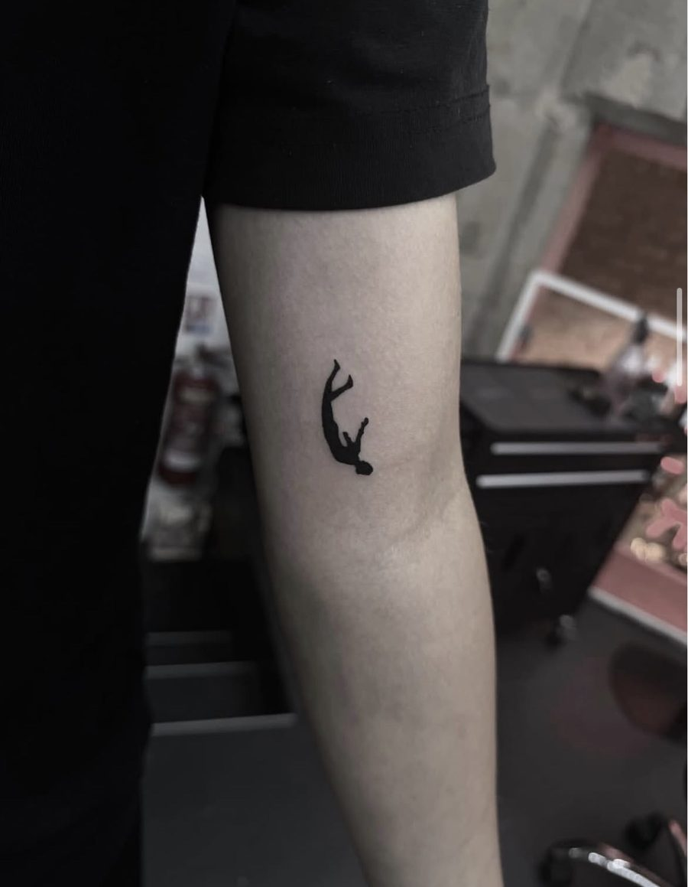
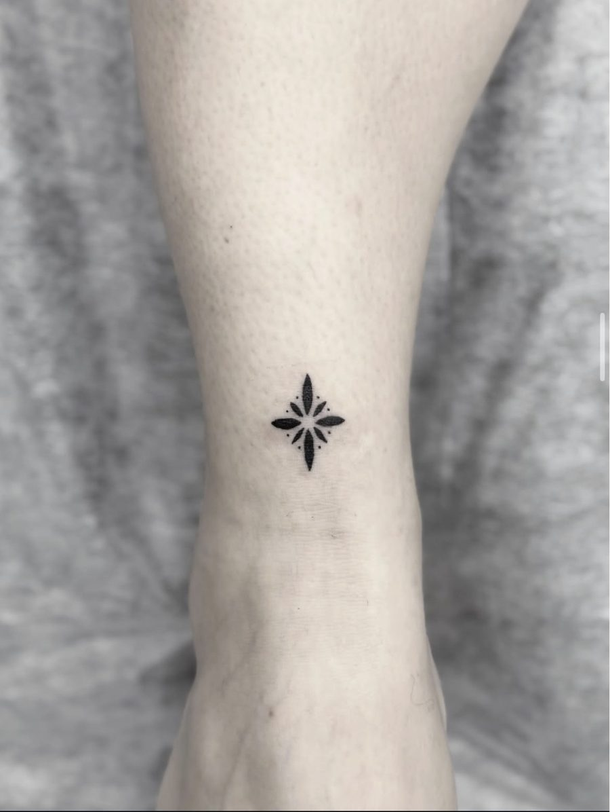
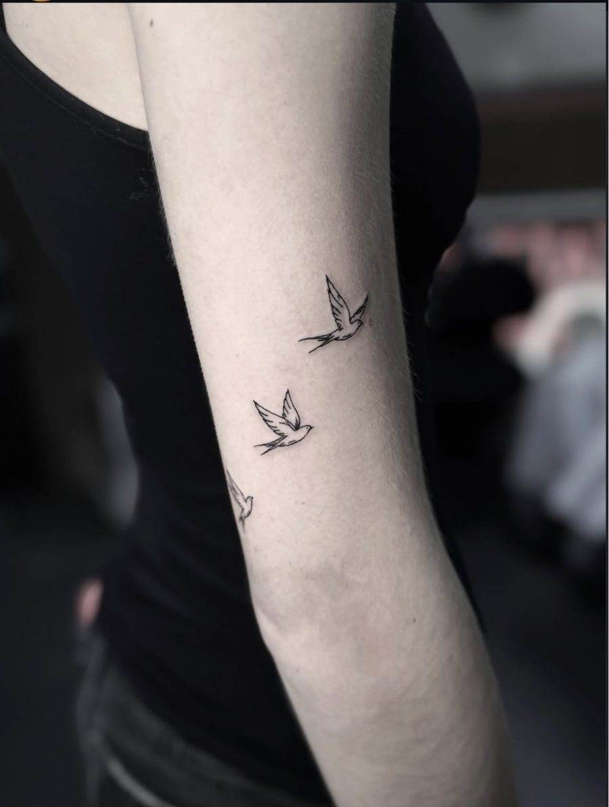

Sweet
Du rose, du charme, des détails délicats. Une finesse qui se remarque de près.
Des traits fins, des motifs délicats et des projets construits avec toi. On parle de ton idée, on ajuste ensemble, et on repère la zone et la taille qui te ressemblent.
Doux dans les détails, affirmé dans la personnalité. Le tatouage reste toujours la vedette.
Du rose, du charme, des détails délicats. Une finesse qui se remarque de près.
Des titres affirmés et une vraie présence. Un studio qui assume ce qu'il est.
Des tatouages réels et le savoir-faire de l’artiste. Chaque projet est unique.



Se faire tatouer pour la première fois, ça pose plein de questions. Voici l'essentiel, sans te faire peur.
Via le formulaire ou par message privé : le motif, la zone, la taille approximative.
Retour sur la faisabilité, proposition de dessin et ajustements jusqu'à ce que ce soit juste.
Pose du stencil, validation, puis séance. Matériel à usage unique et hygiène rigoureuse.
Consignes d'entretien remises en fin de séance, et un suivi si tu en as besoin.
Décris ton idée, la zone du corps et la taille approximative. Tu peux ajouter des références.
Choisis le modèle qui te plaît et demande les informations : disponibilités, taille possible et modalités.
Envoie ton projet : le motif, la zone et la taille approximative. Tu reçois une réponse avec les prochaines étapes.